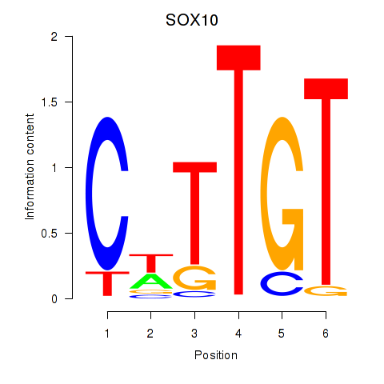
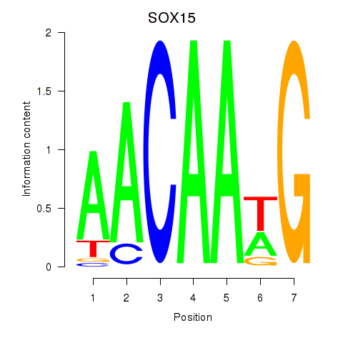

Motif ID: SOX10_SOX15
Z-value: 0.413


Transcription factors associated with SOX10_SOX15:
| Gene Symbol | Entrez ID | Gene Name |
|---|---|---|
| SOX10 | ENSG00000100146.12 | SOX10 |
| SOX15 | ENSG00000129194.3 | SOX15 |
![](http://string-db.org/api/image/network?network_flavor=evidence&limit=0&species=9606&caller_identity=MARA&identifiers=9606.ENSP00000249883%0D9606.ENSP00000345206%0D9606.ENSP00000348086%0D9606.ENSP00000391249%0D9606.ENSP00000370007%0D9606.ENSP00000471423%0D9606.ENSP00000261844%0D9606.ENSP00000406955%0D9606.ENSP00000363079%0D9606.ENSP00000318197%0D9606.ENSP00000341360%0D9606.ENSP00000354398%0D9606.ENSP00000322270%0D9606.ENSP00000372025%0D9606.ENSP00000276654%0D9606.ENSP00000227256%0D9606.ENSP00000222388%0D9606.ENSP00000339527%0D9606.ENSP00000428205%0D9606.ENSP00000262525%0D9606.ENSP00000299300%0D9606.ENSP00000345491%0D9606.ENSP00000344547%0D9606.ENSP00000265437%0D9606.ENSP00000312134%0D9606.ENSP00000376930%0D9606.ENSP00000346879%0D9606.ENSP00000357196%0D9606.ENSP00000222718%0D9606.ENSP00000385576%0D9606.ENSP00000284856%0D9606.ENSP00000401859%0D9606.ENSP00000396620%0D9606.ENSP00000267102%0D9606.ENSP00000302851%0D9606.ENSP00000300482%0D9606.ENSP00000369666%0D9606.ENSP00000249700%0D9606.ENSP00000249014%0D9606.ENSP00000343273%0D9606.ENSP00000276079%0D9606.ENSP00000220429%0D9606.ENSP00000362308%0D9606.ENSP00000325377%0D9606.ENSP00000341662%0D9606.ENSP00000261523%0D9606.ENSP00000360120%0D9606.ENSP00000388648%0D9606.ENSP00000344322%0D9606.ENSP00000325638%0D9606.ENSP00000254627%0D9606.ENSP00000216029%0D9606.ENSP00000276282%0D9606.ENSP00000239882%0D9606.ENSP00000378328%0D9606.ENSP00000359070%0D9606.ENSP00000354869%0D9606.ENSP00000346151%0D9606.ENSP00000410452%0D9606.ENSP00000301072%0D9606.ENSP00000234179%0D9606.ENSP00000301071%0D9606.ENSP00000356999%0D9606.ENSP00000262283%0D9606.ENSP00000320885%0D9606.ENSP00000362527%0D9606.ENSP00000417354%0D9606.ENSP00000268489%0D9606.ENSP00000407552%0D9606.ENSP00000294485%0D9606.ENSP00000357251%0D9606.ENSP00000362979%0D9606.ENSP00000326042%0D9606.ENSP00000340281%0D9606.ENSP00000426070%0D9606.ENSP00000262873%0D9606.ENSP00000216639%0D9606.ENSP00000283285%0D9606.ENSP00000271715%0D9606.ENSP00000313506%0D9606.ENSP00000364013%0D9606.ENSP00000181796%0D9606.ENSP00000319096%0D9606.ENSP00000336799%0D9606.ENSP00000329117%0D9606.ENSP00000354849%0D9606.ENSP00000342023%0D9606.ENSP00000304987%0D9606.ENSP00000247170%0D9606.ENSP00000374507%0D9606.ENSP00000252445%0D9606.ENSP00000263409%0D9606.ENSP00000327585%0D9606.ENSP00000318113%0D9606.ENSP00000262269%0D9606.ENSP00000231484%0D9606.ENSP00000262013%0D9606.ENSP00000252512%0D9606.ENSP00000454021%0D9606.ENSP00000455908%0D9606.ENSP00000318902)
{kind=link}
{kind=link}
{kind=link}
{kind=link}
Top targets:
Gene overrepresentation in biological_process category:
| Log-likelihood per target | Total log-likelihood | Term | Description |
|---|---|---|---|
| 0.2 | 0.5 | GO:0002728 | negative regulation of natural killer cell cytokine production(GO:0002728) |
| 0.1 | 0.2 | GO:0001544 | initiation of primordial ovarian follicle growth(GO:0001544) |
| 0.0 | 0.1 | GO:0051086 | chaperone mediated protein folding independent of cofactor(GO:0051086) |
| 0.0 | 0.2 | GO:1904425 | negative regulation of GTP binding(GO:1904425) |
| 0.0 | 0.2 | GO:1904075 | trophectodermal cell proliferation(GO:0001834) regulation of trophectodermal cell proliferation(GO:1904073) positive regulation of trophectodermal cell proliferation(GO:1904075) |
| 0.0 | 0.2 | GO:1903026 | negative regulation of RNA polymerase II regulatory region sequence-specific DNA binding(GO:1903026) |
| 0.0 | 0.1 | GO:0036515 | serotonergic neuron axon guidance(GO:0036515) |
| 0.0 | 0.1 | GO:0001543 | ovarian follicle rupture(GO:0001543) |
| 0.0 | 0.2 | GO:0051013 | microtubule severing(GO:0051013) |
| 0.0 | 0.1 | GO:0015882 | L-ascorbic acid transport(GO:0015882) transepithelial L-ascorbic acid transport(GO:0070904) |
| 0.0 | 0.2 | GO:1903377 | negative regulation of oxidative stress-induced neuron intrinsic apoptotic signaling pathway(GO:1903377) |
| 0.0 | 0.1 | GO:0021569 | rhombomere 3 development(GO:0021569) |
| 0.0 | 0.1 | GO:1905098 | negative regulation of guanyl-nucleotide exchange factor activity(GO:1905098) |
| 0.0 | 0.1 | GO:0060392 | negative regulation of SMAD protein import into nucleus(GO:0060392) |
| 0.0 | 0.1 | GO:1904059 | regulation of locomotor rhythm(GO:1904059) |
| 0.0 | 0.0 | GO:0070634 | transepithelial ammonium transport(GO:0070634) |
| 0.0 | 0.0 | GO:0032780 | negative regulation of ATPase activity(GO:0032780) |
| 0.0 | 0.1 | GO:0046485 | ether lipid metabolic process(GO:0046485) |
| 0.0 | 0.2 | GO:0035405 | histone-threonine phosphorylation(GO:0035405) |
| 0.0 | 0.1 | GO:1901297 | positive regulation of ephrin receptor signaling pathway(GO:1901189) positive regulation of canonical Wnt signaling pathway involved in cardiac muscle cell fate commitment(GO:1901297) positive regulation of canonical Wnt signaling pathway involved in heart development(GO:1905068) |
| 0.0 | 0.1 | GO:1904885 | beta-catenin destruction complex assembly(GO:1904885) |
| 0.0 | 0.1 | GO:2000048 | negative regulation of cell-cell adhesion mediated by cadherin(GO:2000048) |
| 0.0 | 0.1 | GO:1904209 | regulation of chemokine (C-C motif) ligand 2 secretion(GO:1904207) positive regulation of chemokine (C-C motif) ligand 2 secretion(GO:1904209) |
| 0.0 | 0.1 | GO:0000432 | regulation of transcription from RNA polymerase II promoter by glucose(GO:0000430) positive regulation of transcription from RNA polymerase II promoter by glucose(GO:0000432) |
| 0.0 | 0.1 | GO:0090074 | negative regulation of protein homodimerization activity(GO:0090074) |
| 0.0 | 0.1 | GO:0048861 | leukemia inhibitory factor signaling pathway(GO:0048861) |
| 0.0 | 0.2 | GO:0031274 | positive regulation of pseudopodium assembly(GO:0031274) |
| 0.0 | 0.1 | GO:0089700 | protein kinase D signaling(GO:0089700) |
| 0.0 | 0.1 | GO:0035926 | chemokine (C-C motif) ligand 2 secretion(GO:0035926) |
| 0.0 | 0.0 | GO:0051097 | negative regulation of helicase activity(GO:0051097) cellular response to actinomycin D(GO:0072717) |
| 0.0 | 0.0 | GO:0044335 | external genitalia morphogenesis(GO:0035261) canonical Wnt signaling pathway involved in neural crest cell differentiation(GO:0044335) |
| 0.0 | 0.0 | GO:0032203 | telomere formation via telomerase(GO:0032203) |
Gene overrepresentation in cellular_component category:
| Log-likelihood per target | Total log-likelihood | Term | Description |
|---|---|---|---|
| 0.0 | 0.1 | GO:0034686 | integrin alphav-beta8 complex(GO:0034686) |
| 0.0 | 0.2 | GO:0035867 | alphav-beta3 integrin-IGF-1-IGF1R complex(GO:0035867) |
| 0.0 | 0.0 | GO:0097453 | mesaxon(GO:0097453) ensheathing process(GO:1990015) |
| 0.0 | 0.1 | GO:0097165 | nuclear stress granule(GO:0097165) |
| 0.0 | 0.2 | GO:0000815 | ESCRT III complex(GO:0000815) |
| 0.0 | 0.1 | GO:0016035 | zeta DNA polymerase complex(GO:0016035) |
| 0.0 | 0.0 | GO:0005944 | phosphatidylinositol 3-kinase complex, class IB(GO:0005944) |
| 0.0 | 0.1 | GO:0097513 | myosin II filament(GO:0097513) |
Gene overrepresentation in molecular_function category:
| Log-likelihood per target | Total log-likelihood | Term | Description |
|---|---|---|---|
| 0.0 | 0.1 | GO:1904713 | beta-catenin destruction complex binding(GO:1904713) |
| 0.0 | 0.1 | GO:0031493 | nucleosomal histone binding(GO:0031493) |
| 0.0 | 0.1 | GO:0004923 | leukemia inhibitory factor receptor activity(GO:0004923) |
| 0.0 | 0.2 | GO:0008568 | microtubule-severing ATPase activity(GO:0008568) |
| 0.0 | 0.1 | GO:0070890 | L-ascorbate:sodium symporter activity(GO:0008520) L-ascorbic acid transporter activity(GO:0015229) sodium-dependent L-ascorbate transmembrane transporter activity(GO:0070890) |
| 0.0 | 0.1 | GO:1990698 | palmitoleoyltransferase activity(GO:1990698) |
| 0.0 | 0.1 | GO:0070699 | type II activin receptor binding(GO:0070699) |
| 0.0 | 0.3 | GO:0005049 | nuclear export signal receptor activity(GO:0005049) |
| 0.0 | 0.1 | GO:1990430 | extracellular matrix protein binding(GO:1990430) |
| 0.0 | 0.1 | GO:0004948 | calcitonin receptor activity(GO:0004948) |
| 0.0 | 0.6 | GO:0051959 | dynein light intermediate chain binding(GO:0051959) |
| 0.0 | 0.2 | GO:0016714 | oxidoreductase activity, acting on paired donors, with incorporation or reduction of molecular oxygen, reduced pteridine as one donor, and incorporation of one atom of oxygen(GO:0016714) |
| 0.0 | 0.0 | GO:0001588 | dopamine neurotransmitter receptor activity, coupled via Gs(GO:0001588) |
| 0.0 | 0.1 | GO:0035402 | histone kinase activity (H3-T11 specific)(GO:0035402) |
| 0.0 | 0.0 | GO:1904928 | coreceptor activity involved in canonical Wnt signaling pathway(GO:1904928) |
| 0.0 | 0.0 | GO:0030350 | iron-responsive element binding(GO:0030350) |
|
|
|
|